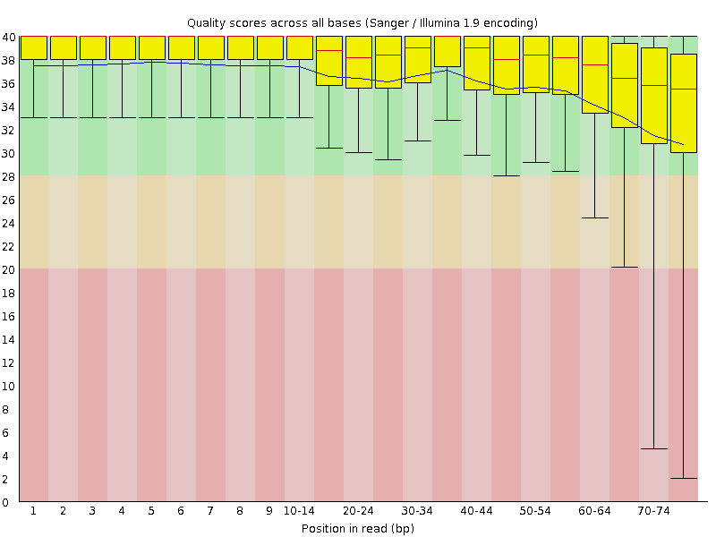
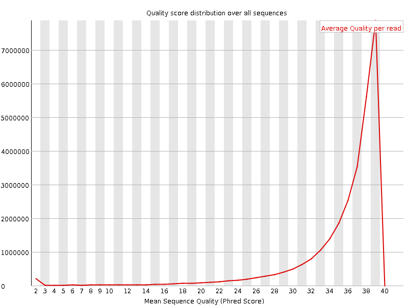
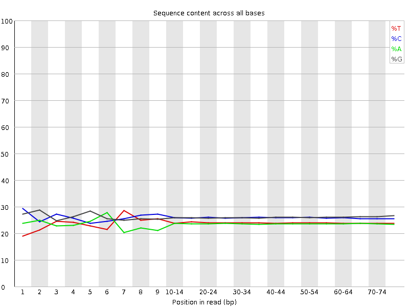
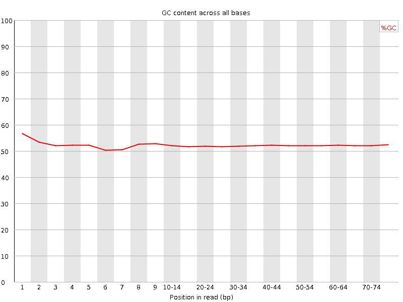
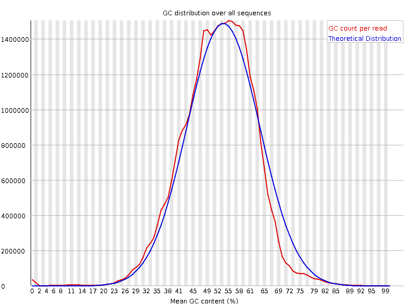
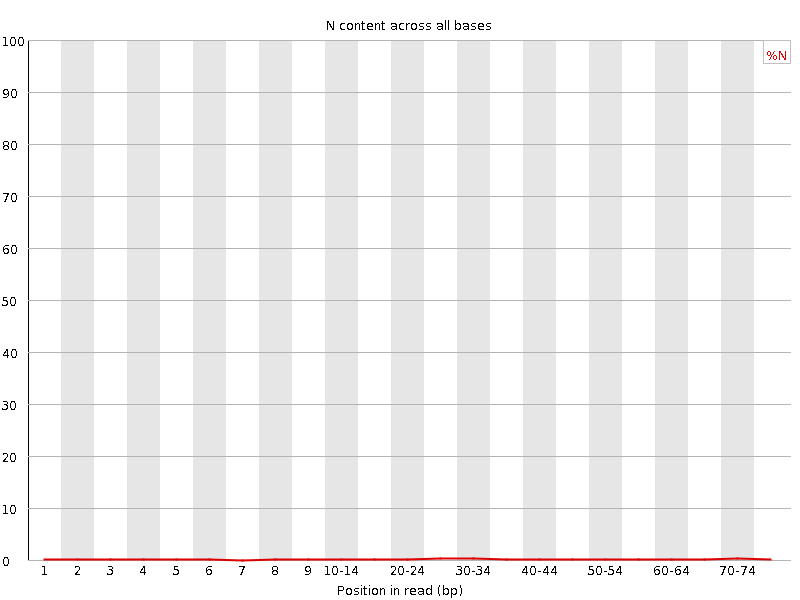
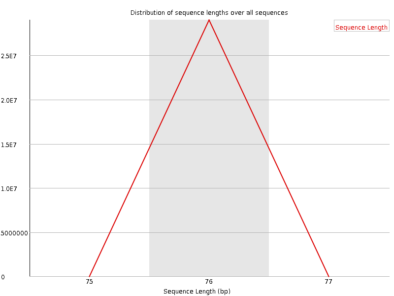
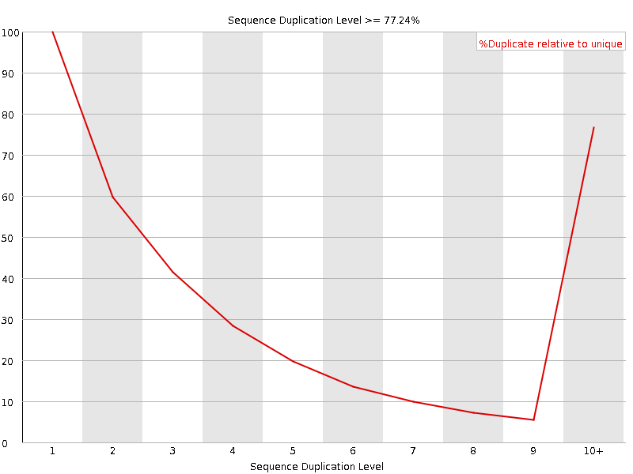
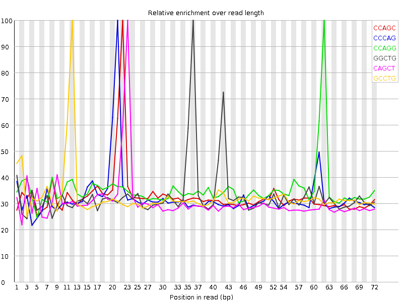

![[OK]](Icons/tick.png) Basic Statistics
Basic Statistics
| Measure | Value |
|---|---|
| Filename | SRR315321_2.fastq |
| File type | Conventional base calls |
| Encoding | Sanger / Illumina 1.9 |
| Total Sequences | 29002949 |
| Filtered Sequences | 0 |
| Sequence length | 76 |
| %GC | 52 |
Per base sequence quality

Per sequence quality scores

Per base sequence content

Per base GC content

Per sequence GC content

Per base N content

Sequence Length Distribution

![[FAIL]](Icons/error.png) Sequence Duplication Levels
Sequence Duplication Levels

![[WARN]](Icons/warning.png) Overrepresented sequences
Overrepresented sequences
| Sequence | Count | Percentage | Possible Source |
|---|---|---|---|
| CGGTGGCGCGTGCCTGTAGTCCCAGCTACTCGGGAGGCTGAGGCTGGAGG | 68968 | 0.23779650821025133 | No Hit |
| CCTGCCAGTAGCATATGCTTGTCTCAAAGATTAAGCCATGCATGTCTAAG | 45400 | 0.15653580606579007 | No Hit |
| CGGTGGCGCGTGCCTGTAGTCCCAGCTACTCGGGAGGCTGAGGTGGGAGG | 34085 | 0.11752253193287344 | No Hit |
| NNNNNNNNNNNNNNNNNNNNNNNNNNNNNNNNNNNNNNNNNNNNNNNNNN | 33495 | 0.11548825603906693 | No Hit |
| GGTGGCGCGTGCCTGTAGTCCCAGCTACTCGGGAGGCTGAGGCTGGAGGA | 29457 | 0.10156553390484532 | No Hit |
Kmer Content

| Sequence | Count | Obs/Exp Overall | Obs/Exp Max | Max Obs/Exp Position |
|---|---|---|---|---|
| CCAGC | 4389685 | 1.9280517 | 5.88825 | 22 |
| CCCAG | 4332300 | 1.9028467 | 5.8790827 | 21 |
| CCAGG | 4349570 | 1.8975593 | 5.3759093 | 62 |
| GGCTG | 4412035 | 1.8846712 | 5.719078 | 36 |
| CAGCT | 3900025 | 1.8520657 | 6.0419173 | 23 |
| GCCTG | 4258315 | 1.8313473 | 5.594009 | 12 |
| CAGGA | 3758600 | 1.7984358 | 5.815444 | 63 |
| CTGGG | 4201370 | 1.7946823 | 5.242368 | 71 |
| GAGGA | 3748315 | 1.7814295 | 5.786798 | 47 |
| GCTGA | 3722620 | 1.7559067 | 5.9123616 | 37 |
| GGTGG | 4052535 | 1.7194402 | 5.473859 | 2 |
| GGAGG | 3967295 | 1.7075402 | 5.3831673 | 33 |
| AGGAG | 3571910 | 1.6975911 | 5.814755 | 64 |
| TTCTG | 3305435 | 1.673036 | 5.4445696 | 69 |
| TGCCT | 3571455 | 1.6719301 | 5.7782135 | 11 |
| CTGAG | 3471780 | 1.6375891 | 5.651465 | 38 |
| TCTGG | 3178130 | 1.4777751 | 5.1431947 | 70 |
| CCTGT | 3141590 | 1.4706944 | 5.474715 | 13 |
| GTGGC | 3305755 | 1.412106 | 5.2276654 | 3 |
| TCCCA | 2953275 | 1.411982 | 5.5163655 | 20 |
| AGGCT | 2945575 | 1.3893857 | 5.590683 | 35 |
| TGAGG | 2932735 | 1.3740079 | 5.432674 | 39 |
| GAGGC | 3082390 | 1.3356733 | 5.1662574 | 34 |
| CTTGA | 2449845 | 1.2578573 | 5.642241 | 55 |
| TTGAG | 2395540 | 1.2216868 | 5.4684334 | 56 |
| AGGAT | 2304440 | 1.1921693 | 5.5834 | 48 |
| TGGCG | 2616910 | 1.1178548 | 5.1359754 | 4 |
| GATCG | 2239265 | 1.0562294 | 5.0612283 | 50 |
| CTACT | 2041230 | 1.0551665 | 5.533244 | 26 |
| AGTCC | 2215890 | 1.0522944 | 5.1558757 | 18 |
| TGTAG | 2026060 | 1.033258 | 5.0255303 | 15 |
| CTGTA | 1947770 | 1.0000701 | 5.346424 | 14 |
| AGCTA | 1617200 | 0.84231114 | 5.311835 | 24 |
| TACTC | 1365125 | 0.70566964 | 5.232747 | 27 |